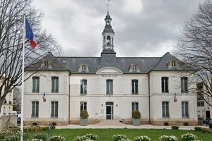
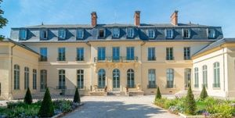
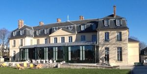
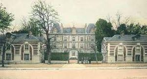
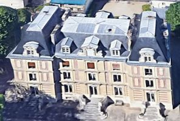
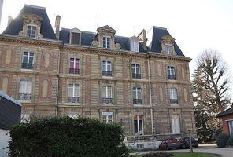
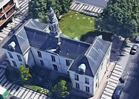
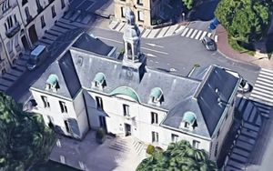

Recensement Jean-Claude Truffet
| Département | 78 — Yvelines |
| Canton | Chatou |
| Commune | Chatou |
| Type d'édifice | Château |
| Période d'origine | XVII |








Trois châteaux dans cet article; Chatou, Faisanderie et Piece-d'Eau. CHATOU. demeure construite pour Bertin contrôleur général des finances de louis XV, vers 1730 sur lemplacement dun bâtiment beaucoup plus ancien. En 1761, le château appartient au comte d'Arginy. En 1829, la propriété est acquise par Camille Joseph Perier. Vers 1830, décor intérieur, peintures, exécuté par le peintre J. Bérot. En 1878, l'édifice est vendu à la Société Immobilière Civile. Lotissement du parc et installation de la mairie. En 1879 mise en place d'un campanile. L'édifice de plan symétrique se compose d'un sous sol, d'un étage carré et d'un étage de comble, le gros-oeuvre : pierre de taille; moellon et enduit. Elévation ordonnancée surmonté de toit à longs pans ; croupe et noue, recouverts d'ardoises. La propriété comprend également un jardin, une orangerie, une chapelle, un parc et une glacière. A été la propriété de monsieur Lainé, aujourd'hui hôtel de ville. FAISANDERIE En 1776, le comte d'Artois reçoit la forêt du Vésinet en apanage. En 1782, il y installe une faisanderie. Il fait construire en 1783 un pavillon dit "Pavillon d'Artois" puis "de La Faisanderie", complété par deux pavillons pour le gardien et le jardinier sur les plans de François Joseph Bélanger. Destruction en 1862 du Pavillon d'Artois pour la construction d'une demeure pour la famille Husson par l'architecte Bourlier. Réduction du parc pour des lotissements en 1858. Vente en 1926 des deux pavillons dénaturés par l'installation de commerces.
Éléments protégés MH : les façades et les toitures des pavillons d'entrée : inscription par arrêté du 29 juillet 1977.
PIECE D'EAU ou villa lambert En 1873, Louis-Etienne Lambert acquiert le parc de la pièce deau lors du morcellement, par la famille Lacroix, de lancien domaine du seigneur de Bertin. Projet de construction en 1883 par l'architecte Alfred Gaultier, le projet est modifié lors de la construction en 1884, le plan général est conservé, mais les deux pavillons latéraux sont supprimés. Au XXe siècle, modification du couronnement des lucarnes avec création d'un deuxième étage de combles et disparition du belvédère. La pièce d'eau du château complète l'ambiance romantique de ce lieu d'exception, régulièrement loué pour des reconstitutions historiques. Le 25 août 1944, les allemands y fusillèrent 27 jeunes résistants de la ville, victimes du zèle abject de quelques dénonciateurs. Le bâtiment, de plan symétrique, est composé d'un étage de soubassement, de deux étages carrés et d'un étage de comble. Le gros-oeuvre de pierre avec brique en remplissage ; calcaire et pierre de taille, élévation ordonnancée surmontée de toit en pavillon ; toit à longs pans ; croupe ; toit conique, recouverts d'ardoises.
Chatou : Famille du comte d'Arginy. Faisanderie : le comte d'Artois famille Husson"
Quatre châteaux dans cet article; Chatou grav-1,Croissy grav 2-3-Faisanderie-grav 4-5 et Piece-d'Eau_6_7-8